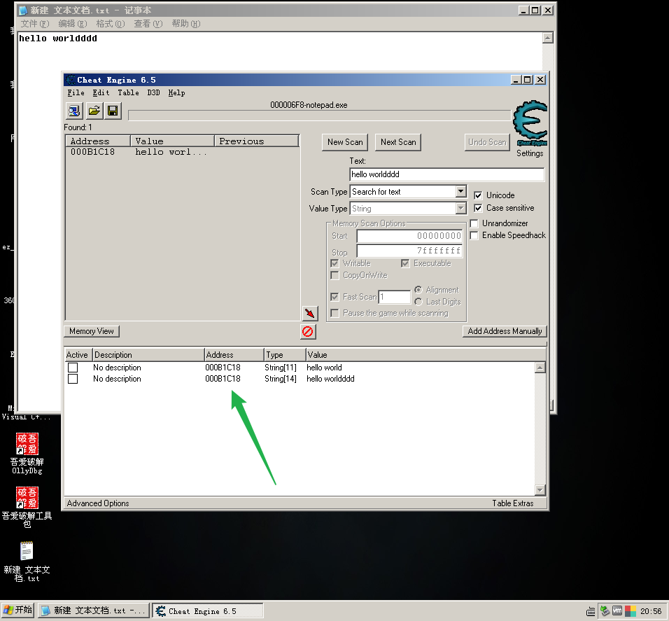
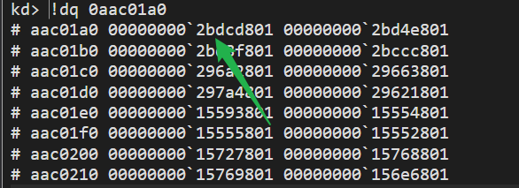

# 10-10-12 分页的寻址范围
在之前的学习中，有一个课后思考题：10-10-12 分页模式物理内存能够识别的最多范围是多少？
我们当时是怎么算的呢？很简单嘛，有 1024 个页表，每个页表有 1024 个物理页，每个物理页有 4KB，那不就是 1024 * 1024 * 4KB = 4GB 吗？！
答案确实是 4GB，但很遗憾，如果你是这样算的，那你对 10-10-12 分页就还没有理解到位。
更有甚者可能会说，32 位系统，2^32=4GB，所以寻址范围是 4GB，这就更加错的离谱。
实际上，决定物理内存寻址范围的是页表项 PTE。
PTE 的低 12 位是属性；高 20 位是基址，低 12 位补零后构成了物理页基址。所以，物理地址的寻址范围是由 PTE 构成的这 32 位物理页基址决定的，4GB 是从这里来的。
注意，线程的 4GB 和物理地址寻址范围的 4GB 不是一个东西。 物理地址寻址的 4GB 我们刚才已经解释过，是由 PTE 决定的。而线程的 4GB 其实指的是 32 位线性地址确定的，这个才是和 32 位系统相关的，和分页模式无关，32 位系统的线性地址就是 32 位。
# 10-10-12 分页的缺点
缺点就是物理地址寻址范围太小了，只有 4GB。随着硬件的发展，物理内存已经超过 4GB 了，所以我们需要一种新的分页模式来映射更多的物理内存，2-9-9-12 分页又称为 PAE（物理地址扩展）分页就应运而生了。
# 2-9-9-12 分页
2-9-9-12 分页将物理地址寻址范围扩大到 2^36=64GB。
# 为什么是 2-9-9-12
- 页的大小是确定的，4KB 不能随便改，所以 32 位的最后一部分就确定为了 12 位。
- 如果想增大物理内存的访问范围，就需要增大 PTE，增大了多少呢？考虑对齐的因素，增加到 8 个字节，由于 PTE 增大了，而 PTT 表的大小没变，依然是 4KB，所以每张 PTT 表能放的 PTE 个数由原来的 1024 个减少到 512 个，512 等于 2 的 9 次方，因此 PTI=9
- 由于 2 的 9 次方个 PDE 就能找到所有的 PTT 表，因此 PDI=9
- 分配到这里时，还剩下前 2 位未分配。与 10-10-12 不同，CR3 不直接指向 PDT 表，而是指向一张新的表，叫做 PDPT 表（页目录指针表），PDPT 表中的每一个成员叫做 PDPTE（Page-Directory-Point-Table Entry，页目录指针表项），每项占 8 个字节。PDPT 表只有 4 个成员，因为 2 位比特位只能满足四种情况：
00 01 10 11。
2-9-9-12 分页结构图
# PDPTE
P位 ：第 0 位，有效位Avail ：这部分供操作系统软件随意使用，CPU 不使用Base Addr ：指向 PDT 表地址，由两部分组成
第一部分：高四字节 32~35 位
第二部分：低 4 字节 12~31 位
这两部分加起来共 24 位，后 12 位补 0
灰色部分 ：保留位
PWT 位与 PCD 位下节学。
# PDE
低二十一位是对齐用的，所以每一页为 2^21=2MB。
PAT 位：页属性表
只有当 PS=1 时，PAT 位才是有意义的（页属性表只针对页）
具体含义用到时再查资吧。
注意：
G 位、PCD 位、PWT 位可以暂且不管。
其他属性位的含义在上面学习 PDPTE 时或在学习 10-10-12 分页的 PDE 与 PTE 时已经介绍，这里不再详述
# PTE

特别说明：
PTE 中 35-12 是物理页基址，24 位，低 12 位补 0
物理页基址 + 12 位的页内偏移指向具体数据
# XD 标志位（AMD 中称为 NX, 即 No Excetion ）
PDE/PTE 结构
段的属性有可读、可写和可执行
页的属性有可读、可写
当 RET 执行返回的时候，如果我修改堆栈里面的数据指向一个我提前准备
好的数据（把数据当作代码来执行，漏洞都是依赖这点，比如 SQL 注入也是）
所以，Intel 就做了硬件保护，做了一个不可执行位，XD=1 时。那么你的软件溢出
了也没有关系，即使你的 EIP 蹦到了危险的 “数据区”，也是不可以执行的！
在 PAE 分页模式下，PDE 与 PTE 的最高位为 XD/NX 位.
# 实验
# 在 2-9-9-12 分页模式下寻找物理地址
老办法利用 CE 查找

按照 2-9-9-12 拆分 000B1C18
00
0 0000 0000
0 1011 0001
2-9-9-12: 0-0-B1-C18
在 windbg 中查找
其中 notepad.exe 的 CR3 为： 0aac01a0
在 windbg 中执行：!dq 0aac01a0

!dq 2bdcd000
!dq 2bdc8000 + b1*8
!db 2be1f000 + C18
# 给 0 地址挂物理页
代码
#include<stdio.h> | |
int main(int argc,char* argv[]){ | |
unsigned int* p = 0; | |
unsigned int a = 1; | |
printf("a Value Adress:%p\n",&a); | |
getchar(); | |
*p = 0x666; | |
printf("p Value;%x",*p); | |
getchar(); | |
return 0; | |
} |
程序的 CR3： 0aac02c0
直接用 !vtop 命令了，不在手动拆分了。
0 和 0012ff54 地址对应的 PDPE、PDE、PTE
这里就把 0 地址 PTE 指向的物理页修改为变量 aPTE 指向的物理页了。
没有！eq 命令，这里要用！ed, 注意地址在内存中的排序。
!ed ac168000 acdb2867!ed ac168004 80000000
成功！
# 逆向分析 MmIsAddressValid 函数 (2-9-9-12)
学习操作系统是如何判断线性地址有效的。
学习操作系统是如何找到 PDE、PTE 的，与之相关的汇编代码我们可以用到。也可以把汇编转成 C。
mov eax, VirtualAddress;
shr eax, 12h ; 右移18位，相当于右移21位取PDI,然后乘以8，即再左移3位。
and eax, 3FF8h ; 与操作，取 eax = PDPTI * 4KB + PDI * 8
sub eax, 3FA00000h ; eax = C0600000 + PDPTI * 4KB + PDI * 8
; eax 指向了 PDE
mov ecx, VirtualAddress;
shr ecx, 9 ; 相当于右移12位，然后乘以8
and ecx, 7FFFF8h ; ecx = PDPTI * 2MB + PDI * 4KB + PTI * 8
sub ecx, 40000000h ; ecx = C0000000 + PDPTI * 2MB + PDI * 4KB + PTI * 8
; ecx 指向 PTE
# 内存中的 2-9-9-12 分页结构图
由 逆向分析 MmIsAddressValid 函数 (2-9-9-12) 可以联想到内存中的 2-9-9-12 分页结构图
总结如下:
1. 第三个 PDPTE 指向了一个 PDT 表，此表的前四项 指向了 PDPTE 的每一个元素
2. 根据计算 C0600000 的最大索引，不会超过 C0604000
mov edi, edi
.text:0043C92A 55 push ebp
.text:0043C92B 8B EC mov ebp, esp
.text:0043C92D 51 push ecx
.text:0043C92E 51 push ecx
.text:0043C92F 8B 4D 08 mov ecx, [ebp+VirtualAddress]
.text:0043C932 56 push esi
.text:0043C933 8B C1 mov eax, ecx
.text:0043C935 C1 E8 12 shr eax, 12h
.text:0043C938 BE F8 3F 00 00 mov esi, 3FF8h
.text:0043C93D 23 C6 and eax, esi
.text:0043C93F 2D 00 00 A0 3F sub eax, 3FA00000h
线性地址 >>18 +C0600000 也就是说。得出的索引是 2^14 ，最大值 4000H 实际应用从 0 开始，也就是 4000H-(1*8byte)
那么得到最后一个 PDE 也就是 C06003FFE8
由此可推出
C0600000 是第一个 PDT 表的首地址
C0601000 是第二个 PDT 表的首地址
C0602000 是第三个 PDT 表的首地址
C0603000 是第四个 PDT 表的首地址
2-9-9-12 分页下
总结进程的 0xC06000000-0xC0603000 线性地址对应的物理页分别存储第一个 PDT 表到第 4 个 PDT 表
而通过当前进程 CR3 指向 PDPT 表只有四项，每项指向一 PDT 表基址
第一个 PDT 表可以寻址 0x00000000-0x3FFFFFFF 这个 PDT 表映射的线性地址是 0xC0600000
第二个 PDT 表可以寻址 0x40000000-0x7FFFFFFF 这个 PDT 表映射的线性地址是 0xC0601000
第三个 PDT 表可以寻址 0x80000000-0xBFFFFFFF 这个 PDT 表映射的线性地址是 0xC0602000
第四个 PDT 表可以寻址 0xC0000000-0xFFFFFFFF 这个 PDT 表映射的线性地址是 0xC0603000
注意的是仔细看上面第 0xC0600000 地址拆分的时候可以看到这个线性地址对应物理页既是的 PDT 表有是 PTT 表
本来就是 2-9-9-12PTT 表有 4KB*512*4=8M 线性地址存储，还有 4 个 PDT，这四个 PDT 存储在 0xC0600000-0xC0603000
这个四个 PDT 表都既是 PDT 也是 PTT 表，否则 8M 的内存是不够的
具体内容参考原文，链接为：https://blog.csdn.net/taolaodawho/article/details/109183883
# 测试 XD 位
CPU 可读 可写 可执行判断
可读 可写的判断
mov eax,ebx
ebx 就是要进行可读判断 eax 进行可写判断
jmp 0x12345678 // 可以修改 EIP 的指令都会进行可执行判断
可执行判断，如果 PDE PTE 其中任何一个的最高位是 1 那么这个指令就会执行失败。
代码转自 https://blog.csdn.net/Kwansy/article/details/108965196
#include <stdio.h> | |
#include <Windows.h> | |
char *buff; | |
DWORD *GetPDE(DWORD addr) | |
{ | |
return (DWORD *)(0xc0600000 + ((addr >> 18) & 0x3ff8)); | |
//DWORD PDPTI = addr >> 30; | |
//DWORD PDI = (addr >> 21) & 0x000001FF; | |
//DWORD PTI = (addr >> 12) & 0x000001FF; | |
//return (DWORD *)(0xC0600000 + PDPTI * 0x1000 + PDI * 8); | |
} | |
DWORD *GetPTE(DWORD addr) | |
{ | |
return (DWORD *)(0xc0000000 + ((addr >> 9) & 0x7ffff8)); | |
//DWORD PDPTI = addr >> 30; | |
//DWORD PDI = (addr >> 21) & 0x000001FF; | |
//DWORD PTI = (addr >> 12) & 0x000001FF; | |
//return (DWORD *)(0xC0000000 + PDPTI * 0x200000 + PDI * 0x1000 + PTI * 8); | |
} | |
void __declspec(naked) R0Function() | |
{ | |
__asm | |
{ | |
push ebp | |
mov ebp,esp | |
sub esp,0x1000 | |
pushad | |
pushfd | |
} | |
__asm push fs | |
//__asm int 3 | |
// 修改 buff 的 XD 位 | |
*(GetPDE((DWORD)buff) + 1) |= 0x80000000; | |
*(GetPTE((DWORD)buff) + 1) |= 0x80000000; | |
//__asm int 3 | |
__asm pop fs | |
__asm | |
{ | |
popfd | |
popad | |
add esp,0x1000 | |
mov esp,ebp | |
pop ebp | |
iretd | |
} | |
} | |
int main(int argc, char* argv[]) | |
{ | |
DWORD dwEAX = 0; | |
BYTE bytecode [7] = {0x90,0xB8,0x01,0x00,0x00,0x00,0xC3}; // NOP, MOV EAX,1, RET | |
int xd; | |
// 申请一个内存页，写入硬编码 | |
buff = (char *)VirtualAlloc(NULL,0x1000,MEM_COMMIT,PAGE_EXECUTE_READWRITE); | |
printf("buff: %p\n", buff); | |
memcpy(buff,bytecode,7); | |
// 测试，对比 XD=0 和 XD=1 的运行结果 | |
printf("输入XD位："); | |
scanf("%d",&xd); // 输入 0 可以调用，输入 1 调用失败 | |
getchar(); | |
if (xd == 1) | |
{ | |
printf("在IDT表构建中断门，请在windbg中执行下面的指令：\n"); | |
printf("eq 8003f500 %04xee00`0008%04x\n",(DWORD)R0Function>>16,(DWORD)R0Function & 0x0000FFFF); | |
getchar(); | |
__asm int 0x20 | |
printf("XD位修改成功，buff不可执行.\n"); | |
} | |
__asm | |
{ | |
push eax | |
xor eax,eax | |
call buff | |
mov dwEAX,eax | |
pop eax | |
}; | |
if (dwEAX == 0) printf("调用失败.\n"); | |
else if (dwEAX == 1) printf("调用成功.\n"); | |
printf("bye!\n"); | |
getchar(); | |
return 0; | |
} |
如果将 XD 修改为 1，那么执行 CALL 会失败，程序会卡死。
如果 XD=0，就是默认情况了，可以正常调用函数并返回。
# windbg 中查看 0xC0000000 与 0xC0600000
其中 0aac0300 是 CR3。!vtop 0aac0300 查看 0 地址的分页
可以发现这两个地址的特殊性， 0xC0600000 所在的物理页既是 PDE 也是 PTE 还是物理页， 0xC0000000 所在的物理页既是 PTE 还是物理页。
0xC0600000 所在的物理页是 0 地址的 PDE
0xC0000000 所在的物理页是 0 地址的 PTE
# Reference
https://blog.csdn.net/Kwansy/article/details/108956971
https://blog.csdn.net/qq_41988448/article/details/102709470
https://blog.csdn.net/Kwansy/article/details/108965196
页机制和 2-9-9-12 分页线性地址页表之间的映射关系 https://blog.csdn.net/taolaodawho/article/details/109183883